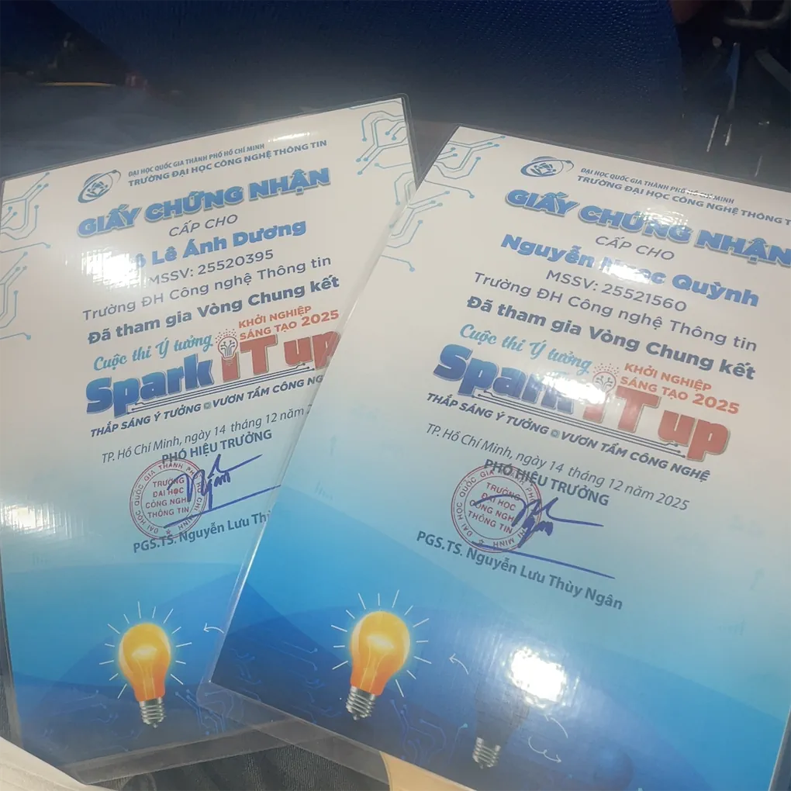
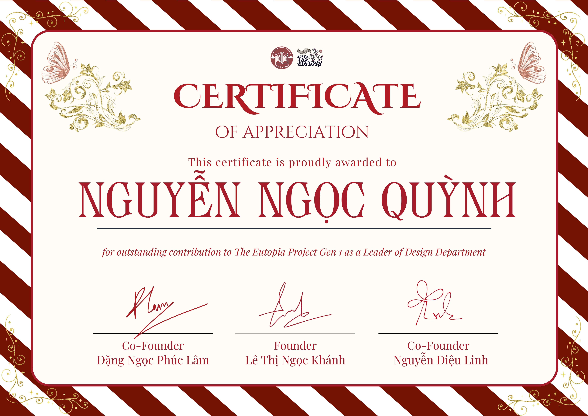

Hello, I am Seris
Data Science Student | Creative Thinker
An ambitious student aiming to build a career that bridges Technology, Economics, and Law. I strive to use data-driven insights to empower ethical decisions and sustainable development.
I'm a passionate Data Science student at UIT. My journey blends technology, economics, and law to solve real-world problems.
I specialize in data analysis, ML, and strategy. Beyond code, I dive deep into content creation and leadership.
Bridging tech & impact. I use data insights to empower ethical decision-making and sustainable development.
VNU-HCM
Major: Data Science
2025 - Present

Deepfake & Voice scams
AI Detection System
Team Leader & Pitching
Top 20 Finalist (20/49)
Developed an AI-powered system to identify synthetic media. Out of 49 participating teams, we were selected as one of the Top 20 Finalists to compete in the intensive Hackathon and Final Round.
View Github
Publications & Brand
Design Team Leader
Progress & Deadline
Led the design team in creating visual assets and key publications. Beyond hands-on designing, I managed the team's workflow, monitored progress daily, and urged members to ensure strict adherence to deadlines.
View FacebookModern vs Traditional
Content Mentor
Huỳnh Long Troupe
A visual journey capturing the "dual aura" of dynamic youth and timeless 'Cải lương' art. As a Content Mentor, I guided the team in refining captions and storytelling, ensuring every post conveyed the right message and emotion before publication.
View on Behance